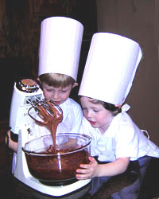

Cooking Classes are fun!
Chef Carolyne loves to offer a fun and relaxing cooking school each month in her newly refurbished kitchen. She teaches an adult class on the fourth Saturday of each month from 6:00 to 8:00 pm. Each class will learn to cook a complete dinner and then enjoy the meal at the end of the class with a wonderful wine pairing. This is a great chance to get together with friends for a fun evening.
Chef Caroline also teaches a children's class on the second Tuesday of each month from 4:00 to 5:30 pm. Our young chefs will learn to cook two dishes that will accompany a full meal served at 5:30 pm. Kids aged 5–8 years accompanied by an adult are welcome. We also host small birthday parties where we put the guests to work baking and decorating the cake! Call for times and prices.
We offer several special adult classes throughout the year. The Valentine Chocolate Extravaganza is a particular favorite. You will learn to dip strawberries, make truffles, and bake a sinful Triple Chocolate Dare You Torte. We also host the Not So Traditional Thanksgiving class and the Super Bowl Snacks class each year with rave reviews. Watch the Web site for details!
Prices are $45.00 for each adults' class and $15.00 for each children's class. Sign up for classes by calling 555-963-8271 or by emailing us: Sign me up!
See what's cooking this month for the adults' class and children's class.